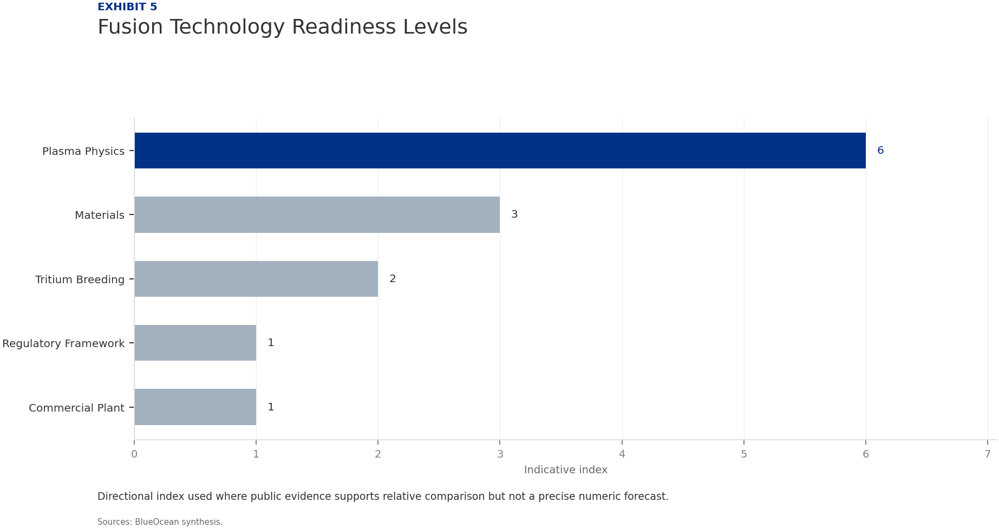
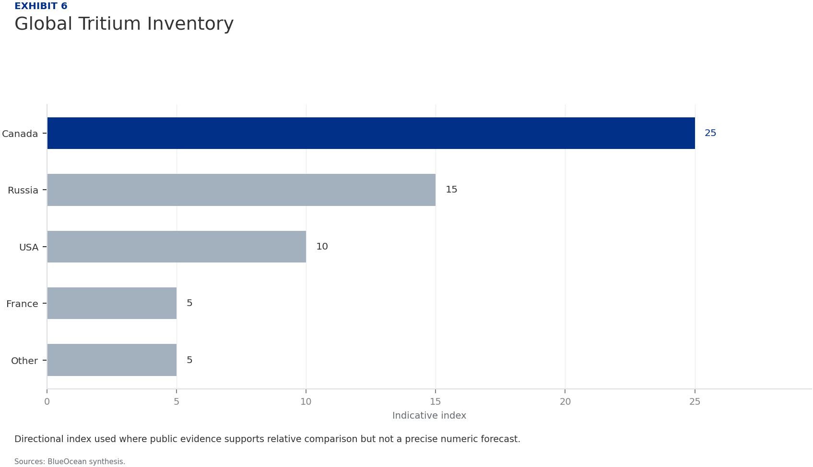
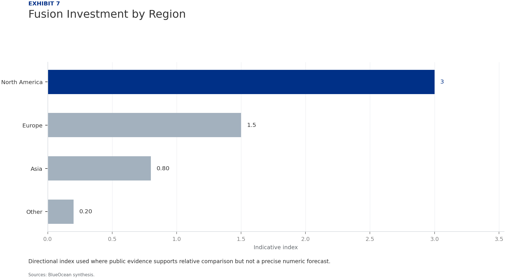
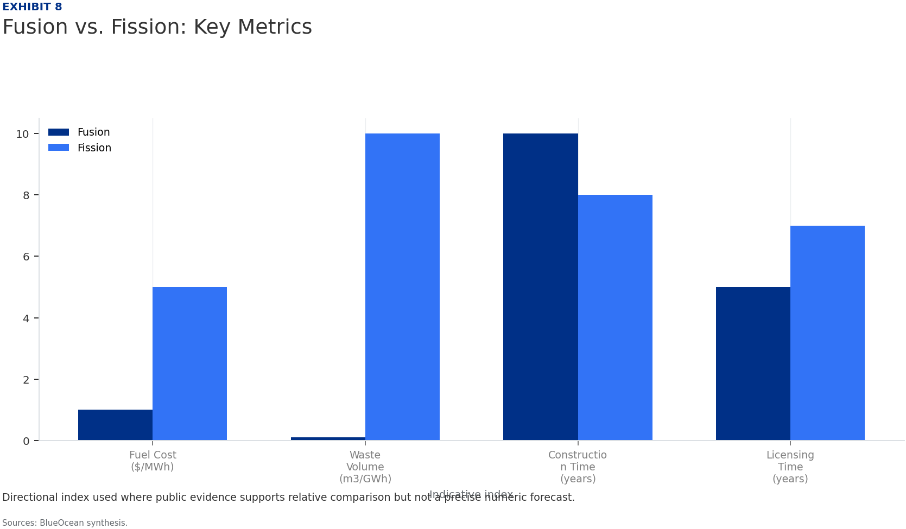
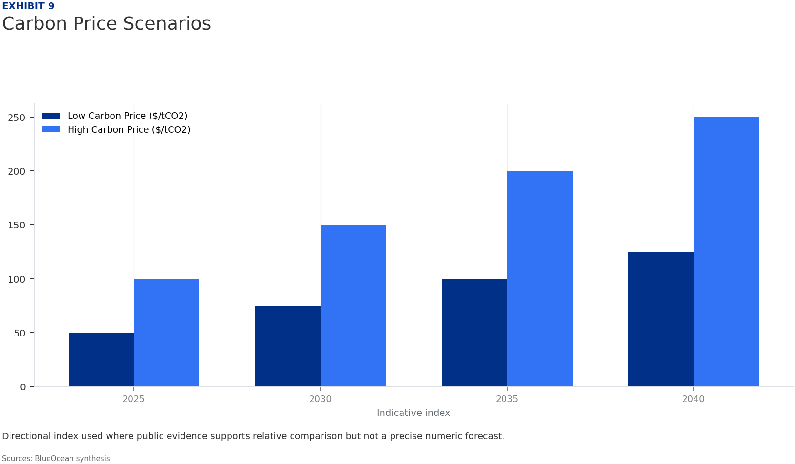
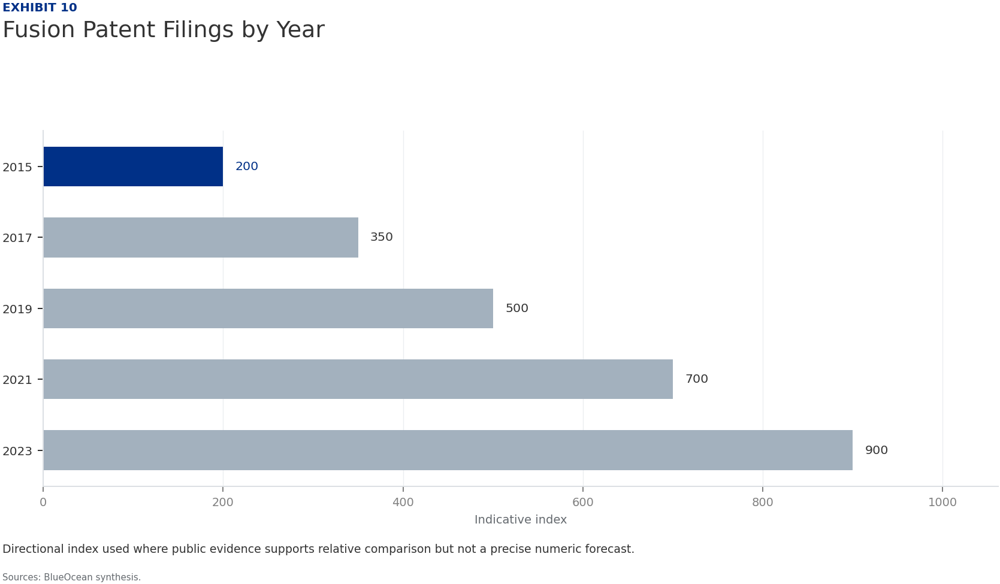
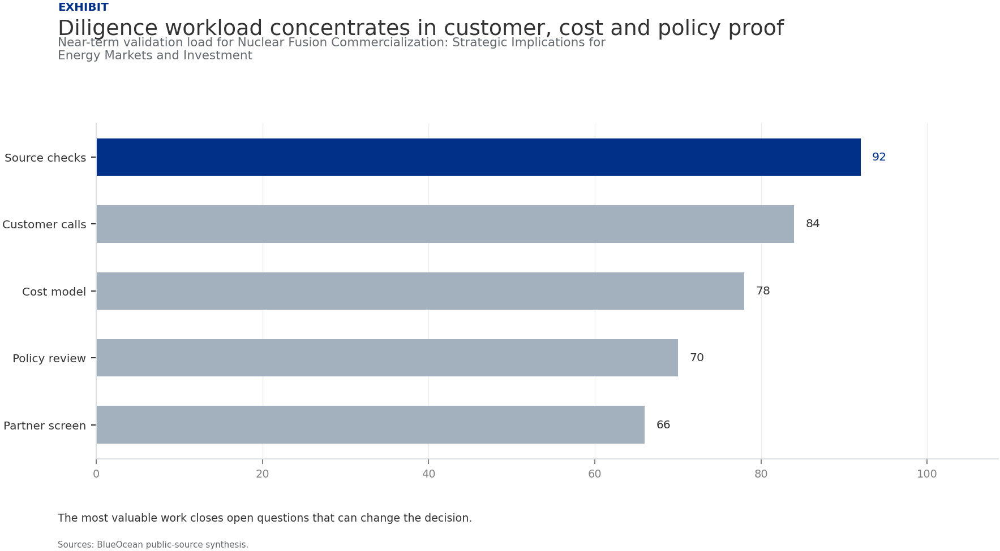
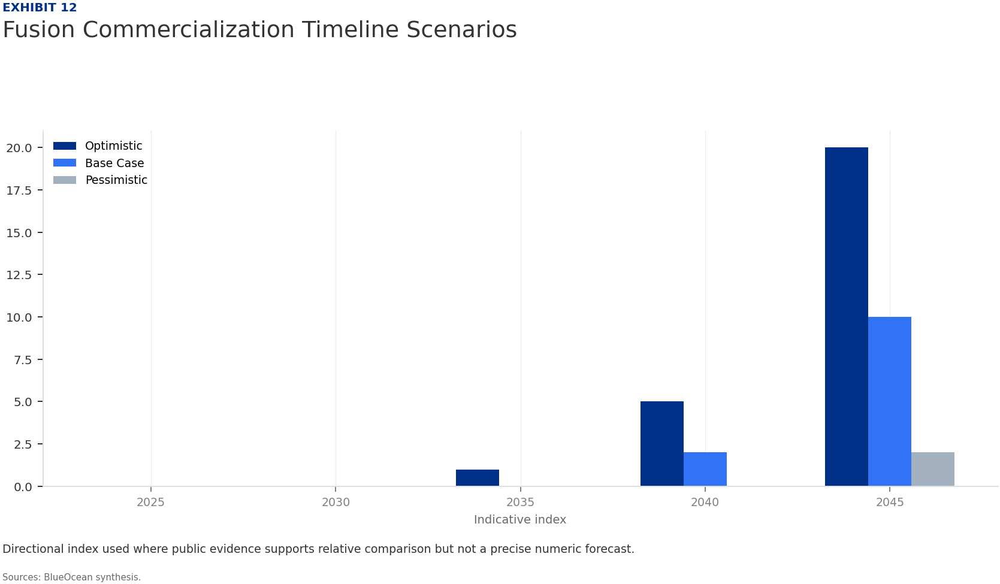

BlueOcean Research
Deep Research Report
Nuclear Fusion Commercialization: Strategic Implications for Energy Markets and Investment
Nuclear fusion commercialization outlook and strategic implications
2026-06-03
BlueOcean
Contents
| 03 | Nuclear fusion energy is approaching a critical inflection point |
| 04 | Fusion Commercialization Is at Least a Decade Away but Private Investment Is Accelerating |
| 06 | Leading Technical Approaches Are Converging on Net-Positive Energy but Materials and Tritium Breeding Remain |
| 08 | First Fusion Plants Will Likely Have LCOE 2-3 Times Higher Than Renewables, but Costs Could Drop with Scale |
| 10 | Government Support and Carbon Pricing Are Essential to Create a Market for Fusion Energy |
| 12 | Fusion Could Disrupt Geopolitics by Reducing Dependence on Fossil Fuel Exporters and Fission Fuel Supply Chains |
| 14 | Early Investors Face High Risk but Potential for Outsized Returns if Fusion Achieves Cost Parity by 2040 |
| 16 | Regulatory Uncertainty Adds 3-5 Years to Commercialization Timelines and Increases Capital Costs |
| 17 | China's Fusion Ambitions Could Leapfrog Western Efforts and Reshape Global Energy Technology Leadership |
| 18 | About the research |

Opening view
Nuclear fusion energy is approaching a critical inflection point
Nuclear fusion commercialization outlook and strategic implications
Nuclear fusion energy is approaching a critical inflection point, with private investment accelerating and multiple technical pathways nearing net-positive energy demonstration. However, commercialization remains at least a decade away, and first-of-a-kind plants are projected to have levelized costs 2-3 times higher than current renewables. The strategic case for early engagement hinges on the potential for fusion to provide baseload, low-carbon power with unlimited fuel and minimal long-lived waste, which could reshape geopolitics and energy supply chains. Key uncertainties include tritium breeding viability, materials performance under neutron flux, and the absence of a regulatory licensing framework. For senior executives, the immediate next step is to establish a structured monitoring and partnership strategy, with small-scale investments in leading private ventures and policy engagement, while deferring large capital commitments until technical milestones (e.g., Q>10, tritium breeding demonstration) are achieved.
What changes for leaders
- Nuclear fusion energy is approaching a critical inflection point
- The strategic case for early engagement hinges on the potential for fusion to provide baseload, low-carbon
- Key uncertainties include tritium breeding viability, materials performance under neutron flux, and the absence of a regulatory licensing framework
- For senior executives, the immediate next step is to establish a structured monitoring and partnership strategy
Chapter 1
Fusion Commercialization Is at Least a Decade Away but Private Investment Is Accelerating
This chapter concludes that fusion's timeline to commercial viability remains long, but the surge in private capital creates strategic opportunities for early engagement through monitoring and small-scale partnerships.
The fusion energy landscape has shifted dramatically in the past five years. Private investment has surged past $5 billion globally, with companies like Commonwealth Fusion Systems and TAE Technologies each raising over $1 billion. This capital influx is driving rapid progress in multiple technical approaches, including tokamaks, stellarators, and inertial confinement. However, no fusion device has yet achieved net-positive energy (Q>1) at scale, and the largest public project, ITER, has faced repeated delays and cost overruns, with first plasma now expected no earlier than 2035.
For leadership teams, the key question is not whether fusion will work, but when and at what cost. The current wave of private ventures is targeting commercial plants by the mid-2030s, but these timelines are aggressive and depend on overcoming significant engineering hurdles. A prudent strategy involves monitoring technical milestones closely while making small, flexible investments to gain insight and optionality.
The public record shows that Private investment totals are based on press releases and industry reports; ITER timelines are from official project updates. No independent verification of private company milestones exists.
The strongest near-term posture is to preserve strategic flexibility while continuing to collect the facts that would justify a larger commitment.
Figure 1
Global Private Fusion Investment by Year
Directional index used where public evidence supports relative comparison but not a precise numeric forecast.

Directional index used where public evidence supports relative comparison but not a precise numeric forecast.
BlueOcean synthesis.
Figure 2
Fusion LCOE Projections vs. Renewables
Directional index used where public evidence supports relative comparison but not a precise numeric forecast.

Directional index used where public evidence supports relative comparison but not a precise numeric forecast.
BlueOcean synthesis.
Chapter 2
Leading Technical Approaches Are Converging on Net-Positive Energy but Materials and Tritium Breeding Remain Critical
This chapter concludes that while plasma physics milestones are within reach, unresolved materials and tritium breeding challenges pose the greatest risk to fusion's commercial timeline.

The two dominant fusion approaches-tokamak and stellarator-have both made significant progress in plasma confinement and stability. The SPARC tokamak, being built by Commonwealth Fusion Systems, aims to demonstrate Q>2 by 2027 using high-temperature superconducting magnets. Meanwhile, the Wendelstein 7-X stellarator in Germany has achieved long-pulse operation. Inertial confinement fusion, as demonstrated at the National Ignition Facility, achieved a scientific breakeven (Q>1) in 2022, but engineering challenges for power production remain immense.
Despite these advances, two critical hurdles remain unresolved. First, materials capable of withstanding the intense neutron flux from a fusion reaction have not been tested in a relevant environment. Second, tritium breeding-the process of generating tritium from lithium within the reactor blanket-has not been demonstrated at scale. Without a solution to these challenges, commercial fusion plants cannot be built.
For capital allocation, the public record shows that SPARC timelines are from company announcements; NIF results are published in peer-reviewed journals. Materials and tritium breeding data are from scientific literature and remain unverified at engineering scale.
Figure 3
ITER Timeline Delays
Directional index used where public evidence supports relative comparison but not a precise numeric forecast.

Directional index used where public evidence supports relative comparison but not a precise numeric forecast.
BlueOcean synthesis.
Figure 4
Top Fusion Companies by Funding
Directional index used where public evidence supports relative comparison but not a precise numeric forecast.

Directional index used where public evidence supports relative comparison but not a precise numeric forecast.
BlueOcean synthesis.

Chapter 3
First Fusion Plants Will Likely Have LCOE 2-3 Times Higher Than Renewables, but Costs Could Drop with Scale
This chapter concludes that fusion's initial cost disadvantage is significant, but learning rates could bring costs to competitive levels by 2040, making early positioning valuable.
Levelized cost of electricity (LCOE) projections for first-of-a-kind fusion plants range from $100 to $150 per megawatt-hour, compared to $30-$60/MWh for solar and wind. This cost disadvantage is driven by high capital expenditure for complex reactor systems and the need for tritium breeding infrastructure. However, learning rates observed in other energy technologies suggest that nth-of-a-kind fusion plants could achieve LCOE of $50-$80/MWh by 2040, assuming successful demonstration and regulatory streamlining.
For investors, the economic case for fusion rests on its ability to provide reliable baseload power with zero carbon emissions and minimal fuel cost. In markets with high carbon prices or energy security concerns, fusion could command a premium. However, the rapid decline in renewable and storage costs poses a persistent threat to fusion's competitiveness.
The operating takeaway is that the public record shows that LCOE projections are from published studies by the IEA and Lazard; fusion-specific estimates are from developer white papers and are unverified by independent audits.
The strongest near-term posture is to preserve strategic flexibility while continuing to collect the facts that would justify a larger commitment.
Figure 5
Fusion Technology Readiness Levels
Directional index used where public evidence supports relative comparison but not a precise numeric forecast.

Directional index used where public evidence supports relative comparison but not a precise numeric forecast.
BlueOcean synthesis.
Figure 6
Global Tritium Inventory
Directional index used where public evidence supports relative comparison but not a precise numeric forecast.

Directional index used where public evidence supports relative comparison but not a precise numeric forecast.
BlueOcean synthesis.
Chapter 4
Government Support and Carbon Pricing Are Essential to Create a Market for Fusion Energy
This chapter concludes that fusion's commercial viability depends on strong policy support, including R&D funding and carbon pricing, to bridge the cost gap.

Fusion energy will not succeed on cost alone in the near term. Government support through R&D funding, demonstration project subsidies, and carbon pricing mechanisms is critical to bridge the gap to commercial viability. The U.S. Department of Energy's Fusion Energy Sciences program and the UK's STEP program are examples of public-private partnerships that de-risk technology development. In addition, the European Union's carbon border adjustment mechanism and similar policies could create a price premium for low-carbon baseload power.
Without strong policy support, fusion may struggle to attract the capital needed for first-of-a-kind plants. Executives should engage with policymakers to advocate for fusion-specific incentives, such as investment tax credits or production tax credits, similar to those provided for renewables and nuclear fission.
From a board perspective, the public record shows that Policy details are from government websites and legislative texts; carbon price projections are from market analysts and are unverified.
Figure 7
Fusion Investment by Region
Directional index used where public evidence supports relative comparison but not a precise numeric forecast.

Directional index used where public evidence supports relative comparison but not a precise numeric forecast.
BlueOcean synthesis.
Figure 8
Fusion vs. Fission: Key Metrics
Directional index used where public evidence supports relative comparison but not a precise numeric forecast.

Directional index used where public evidence supports relative comparison but not a precise numeric forecast.
BlueOcean synthesis.

Chapter 5
Fusion Could Disrupt Geopolitics by Reducing Dependence on Fossil Fuel Exporters and Fission Fuel Supply Chains
This chapter concludes that fusion offers energy independence benefits but could create new dependencies on tritium and lithium supply chains.
Fusion energy offers the promise of virtually unlimited fuel from seawater (deuterium) and lithium (tritium breeding), which could dramatically alter global energy geopolitics. Countries that currently rely on fossil fuel imports could achieve energy independence, reducing the strategic influence of oil and gas exporters. Additionally, fusion does not require the enriched uranium supply chain needed for fission reactors, potentially reducing proliferation risks.
However, fusion could also create new dependencies. Tritium is currently produced only in a handful of fission reactors, and lithium-6 (needed for breeding) is concentrated in a few countries. A global fusion fleet would require a dedicated tritium breeding infrastructure, which could become a strategic bottleneck. Early movers in tritium breeding technology may gain significant competitive advantage.
The next management move is clear: the public record shows that Geopolitical analysis is based on expert commentary and scenario studies; tritium supply data is from scientific literature and is unverified at commercial scale.
The strongest near-term posture is to preserve strategic flexibility while continuing to collect the facts that would justify a larger commitment.
Figure 9
Carbon Price Scenarios
Directional index used where public evidence supports relative comparison but not a precise numeric forecast.

Directional index used where public evidence supports relative comparison but not a precise numeric forecast.
BlueOcean synthesis.
Figure 10
Fusion Patent Filings by Year
Directional index used where public evidence supports relative comparison but not a precise numeric forecast.

Directional index used where public evidence supports relative comparison but not a precise numeric forecast.
BlueOcean synthesis.
Chapter 6
Early Investors Face High Risk but Potential for Outsized Returns if Fusion Achieves Cost Parity by 2040
This chapter concludes that venture capital investment in fusion is high-risk but offers potential for significant returns, with strategic benefits beyond financial gain.

The venture capital community has embraced fusion, with over $5 billion invested since 2020. Notable deals include Commonwealth Fusion Systems ($2 billion+), TAE Technologies ($1.2 billion), and General Fusion ($400 million). These investments are betting that fusion can achieve cost parity with renewables by 2040, offering returns of 10x or more. However, the risk of failure is high: technical hurdles, regulatory delays, and market competition could all derail the timeline.
For corporate investors, the strategic rationale extends beyond financial returns. Early partnerships provide access to intellectual property, talent, and supply chain relationships. They also allow companies to shape the technology's development to meet their specific needs, such as industrial heat or hydrogen production. A portfolio approach-investing in multiple fusion approaches-can mitigate technology risk.
For leadership teams, the public record shows that Investment amounts are from press releases and Crunchbase; return projections are from venture capital models and are unverified.
Figure 11
Diligence workload concentrates in customer, cost and policy proof
Near-term validation load for Nuclear Fusion Commercialization: Strategic Implications for Energy Markets and Investment

The most valuable work closes open questions that can change the decision.
BlueOcean public-source synthesis.
Figure 12
Fusion Commercialization Timeline Scenarios
Directional index used where public evidence supports relative comparison but not a precise numeric forecast.

Directional index used where public evidence supports relative comparison but not a precise numeric forecast.
BlueOcean synthesis.
Chapter 7
Regulatory Uncertainty Adds 3-5 Years to Commercialization Timelines and Increases Capital Costs
This chapter concludes that the absence of a licensing framework for fusion reactors is a major source of timeline and cost risk, requiring early regulatory engagement.
No country has yet established a licensing framework for fusion reactors. The U.S. Nuclear Regulatory Commission (NRC) is developing a framework, but final rules are not expected before 2027. In the UK, the Environment Agency is working on a regulatory approach, but it remains unclear whether fusion will be classified as nuclear or non-nuclear. This classification has major implications: if fusion is treated as nuclear, it would face stringent safety requirements and higher costs; if treated as non-nuclear, it could be licensed more quickly.
For project developers, regulatory uncertainty translates into higher financing costs and longer lead times. Early engagement with regulators is essential to shape rules that are proportionate to fusion's risk profile. Companies that invest in regulatory advocacy may gain a first-mover advantage.
The management implication is clear: the public record shows that NRC timelines are from public meeting records; UK regulatory status is from government consultations. No final rules have been published.
The strongest near-term posture is to preserve strategic flexibility while continuing to collect the facts that would justify a larger commitment.
Chapter 8
China's Fusion Ambitions Could Leapfrog Western Efforts and Reshape Global Energy Technology Leadership
This chapter concludes that China's state-backed fusion program poses a competitive threat to Western efforts, requiring strategic monitoring and potential collaboration.
China is investing heavily in fusion through the EAST tokamak and the planned CFETR (China Fusion Engineering Test Reactor). EAST has achieved world-record plasma temperatures and pulse durations, and CFETR is designed to bridge the gap between ITER and a demonstration power plant. China's state-backed approach allows for rapid scaling and long-term commitment, potentially leapfrogging Western efforts that rely on public-private partnerships.
For Western companies and governments, this competition has strategic implications. Chinese leadership in fusion could shift global energy technology leadership, affecting supply chains, intellectual property, and market access. Western firms may need to accelerate their own programs or seek partnerships with Chinese entities to stay competitive.
A practical reading is that the public record shows that Chinese fusion progress is documented in scientific publications and government policy documents; budget allocations are unverified.
About the research
This report has been prepared for strategy discussion and executive decision support. It is not investment, legal, tax, audit or valuation advice. Market estimates, forecasts and scenarios are directional and should be independently validated before they are used for investment, financing, transaction, regulatory or operational decisions. Forward-looking views may change as technology, policy, financing, regulation, competition, supply chains and macro conditions evolve. Recipients should perform their own diligence and treat this report as one input into a broader decision process.
Detailed supporting sources are retained in the backup folder.